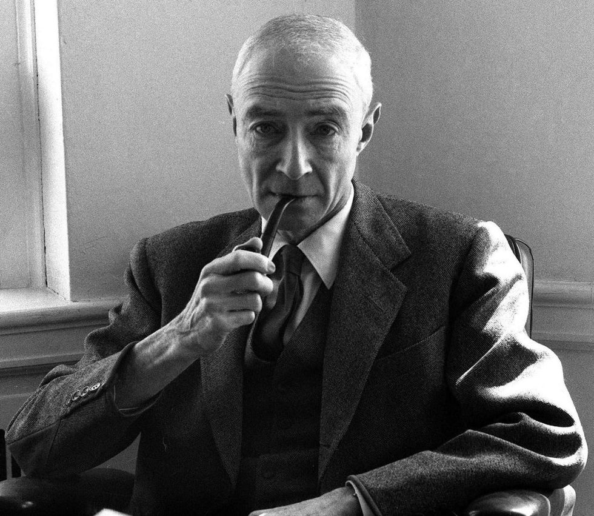
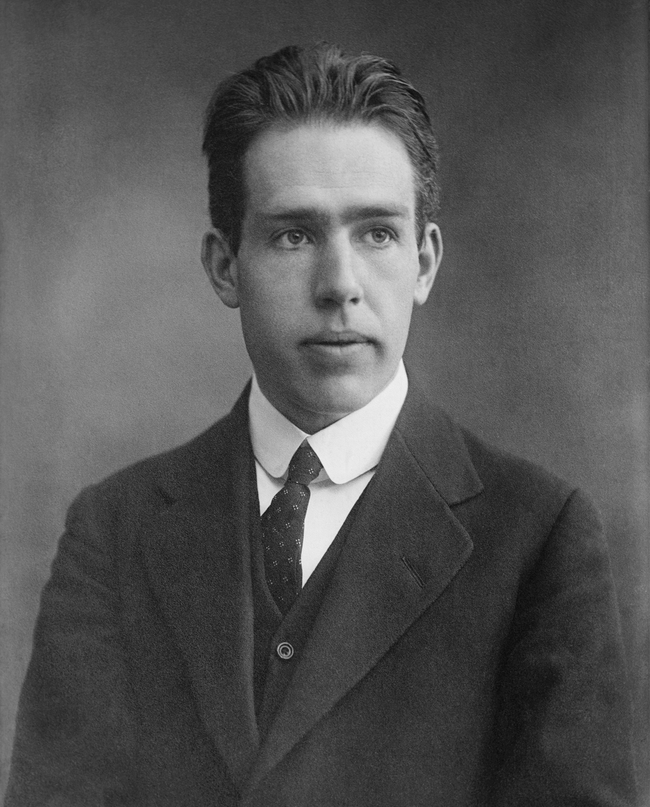
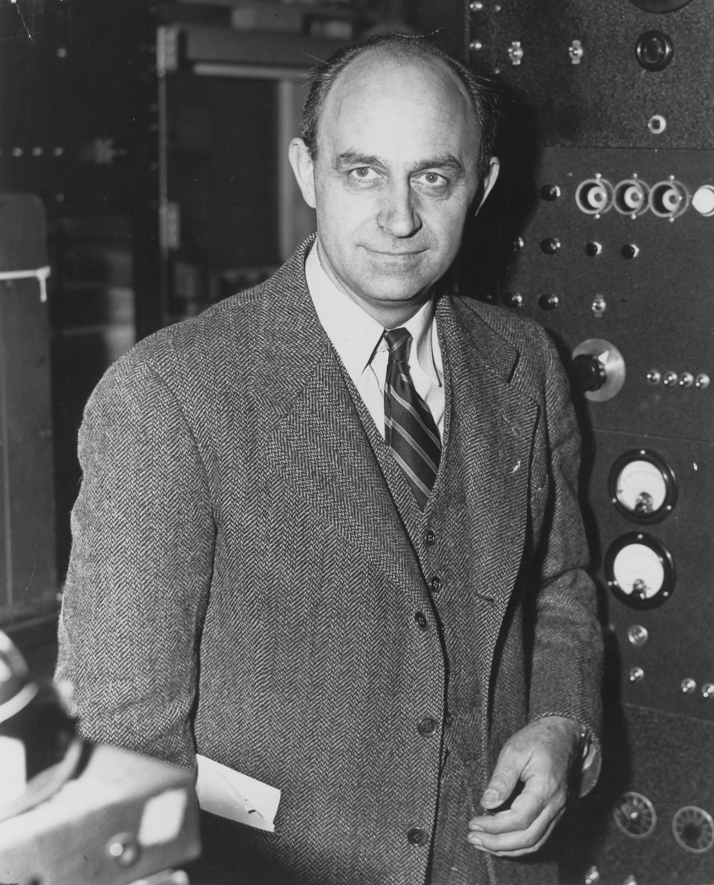
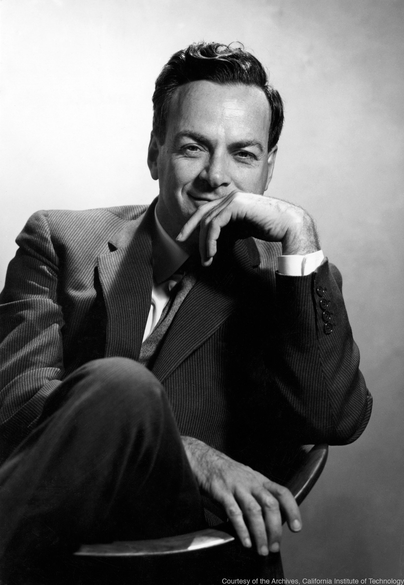
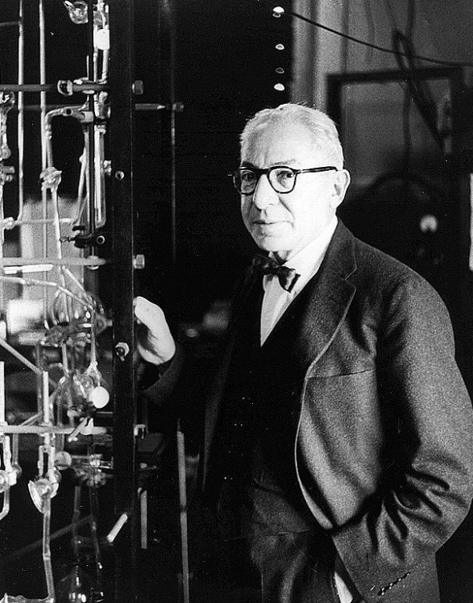

Who is involved in this project?
-

羅伯特·J·奧本海默
Robert J. Oppenheimer
奧本海默在曼哈頓計劃期間擔任科學顧問委員會主席，他是該計劃的核心人物之一。計劃結束後，他回到學術界並擔任加州大學伯克利分校的教授，繼續在理論物理學領域進行研究。
在曼哈頓計劃之前，奧本海默已經是一位傑出的理論物理學家。他在量子力學和原子核物理領域做出了重要貢獻，特別是在核裂變和核合成方面。
奧本海默被認為是一位思想深邃的科學家，他的一些引用非常著名。其中最著名的引用之一是在看到第一次原子彈試爆後，他引用了印度教經典《巴格瓦德·吉塔》中的一句話：“我成為破壞者，毀滅世界的力量。”這句話後來成為了許多關於科學倫理和原子能利用的討論的焦點。
-
尼爾斯·波耳
Niels Bohr
尼爾斯·波耳和奧本海默以及曼哈頓計劃有一定的關係，但波耳並非曼哈頓計劃的直接參與者。在曼哈頓計劃期間，波耳被邀請到美國，成為哥倫比亞大學的客座教授。雖然波耳並未直接參與核武器的研發工作，但他在當時與奧本海默等科學家有一些接觸和討論。
波耳與奧本海默之間有一段有趣的互動，他們在理論物理和哲學上進行了一些深入的討論，特別是關於核武器的使用和人類責任等倫理問題。波耳對於核武器的發展和使用持有較為複雜的立場，他擔心核武器的潛在破壞性和對人類的長期影響。
 -

恩里科·費米
Enrico Fermi
費米是一位重要的理論物理學家，在曼哈頓計劃中負責設計和建造第一個控制的核鍋爐。他在計劃結束後成為芝加哥大學的教授，並在核物理學和高能物理學領域繼續進行研究。
中子研究和中子緩慢化：費米在1934年的實驗中發現了中子的存在以及中子與原子核的相互作用。這項發現為後來的核反應和核能的研究奠定了基礎。費米還提出了中子緩慢化的概念，即中子在與物質相互作用時可以減慢其速度，這對於核反應的控制和核能的利用至關重要。
總的來說，費米的研究和貢獻為核能的發展和應用提供了重要的基礎和指導。他的工作不僅推動了核能的利用，也提高了對核能的安全性和可持續性的關注，對於現代能源和科學技術的發展產生了深遠的影響。
-
愛德華·泰勒
Edward Teller
泰勒是一位匈牙利裔美國理論物理學家，對氫彈的發展做出了重要貢獻，這是超越原子彈的一個進展。他在曼哈頓計劃中工作，後來成為熱核武器發展的倡導者。泰勒繼續參與核研究，對等離子體物理學和天體物理學等不同領域做出了貢獻。
愛德華·泰勒是核武器和水素彈的先驅之一。他在曼哈頓計劃期間參與了美國的原子彈研發，並在後來的水星計劃中負責設計和開發更強大的水素彈。
泰勒對核能政策和國防政策也有影響力。他主張強化美國的核威懾力量，並提出了一些有爭議的觀點，例如在冷戰期間支持建造更多的核武器。

-

理查德·費曼
Richard Feynman
費曼是一位理論物理學家，在曼哈頓計劃期間對原子彈的發展做出了重要貢獻。計劃結束後，他繼續在物理學的各個領域做出重要貢獻，包括量子電動力學。費曼以他在粒子物理學方面的工作和發展的費曼圖表而聞名，這些圖表用於計算基本粒子之間的相互作用。
-
伊西多爾·艾倫·拉比
Isidor Isaac Rabi
拉比是一位美國物理學家，他在曼哈頓計劃中擔任了重要職務。他被任命為計劃下的核磁共振實驗室的負責人，負責研究和開發核磁共振技術，該技術在核武器研究中起到了關鍵作用。拉比還參與了鈾235的濃縮工作，這是製造原子彈所需的關鍵材料。
奧本海默與拉比之間存在密切的合作關係，他們共同努力確保曼哈頓計劃的成功。奧本海默對科學的深刻理解和拉比在實驗室工作方面的專長相輔相成，為項目的科學和技術進展提供了堅實的基礎。他們在曼哈頓計劃期間的貢獻對於美國成功開發出原子彈具有重要意義。
